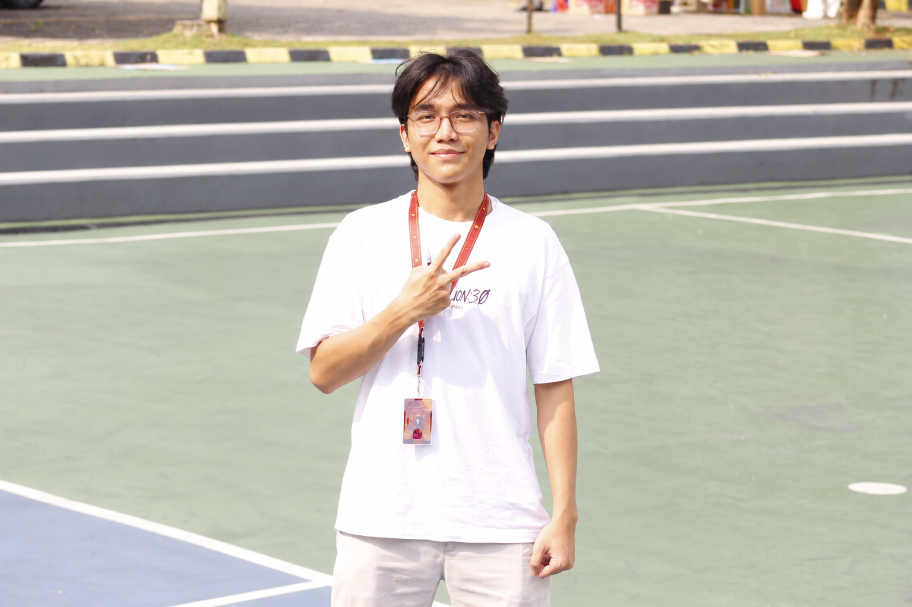
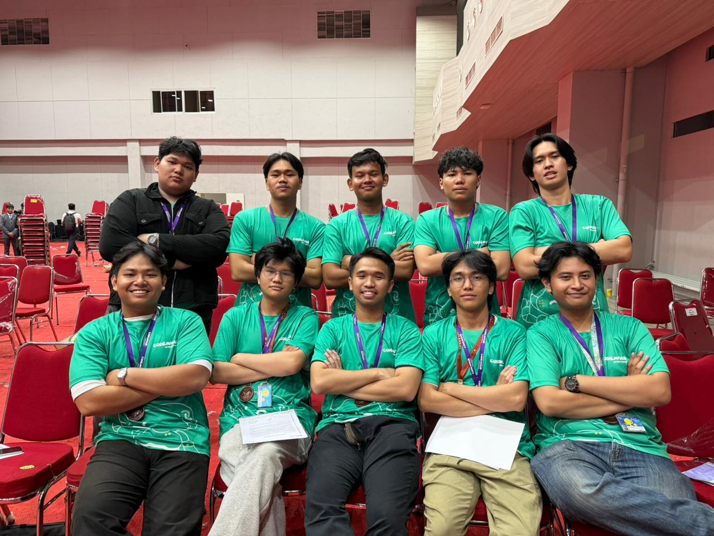

EDUCATION / 2024 — 2028
BINUS UNIVERSITY
Computer Science
Undergraduate studies focused on software, computing fundamentals, and intelligent systems.WEB / INTELLIGENT SYSTEMS / BUILD & LEARN
Computer Science student building across Web Development and Intelligent Systems.
◉
Build. Learn. Question. Repeat.
I'm a Computer Science student at BINUS University.
I enjoy turning technical ideas into practical digital products — from interfaces and web applications to machine-learning and computer-vision systems.
Outside development, student events have taught me how to coordinate with teams, solve operational problems, and keep learning from the people around me.
◉Computer Science
Undergraduate studies focused on software, computing fundamentals, and intelligent systems.Python · JavaScript · C++
HTML · CSS · React
Flask · FastAPI · SQL · Supabase
Scikit-learn · XGBoost · PyTorch · Torchvision
Machine Learning · Computer Vision · NLP · UI/UX Design
OpenCV · Git · GitHub · Docker · Figma

Volunteered during Codeavour 7.0 International in Jakarta, supporting logistics and operational needs for an international robotics event. Assisted with equipment preparation, venue setup, and on-site coordination to help ensure smooth event execution.
Each card is a project signal. Tune into a channel to open the full broadcast.
An explainable screening system that extracts measurable visual features from leaf images and evaluates ensemble models across six crop conditions.